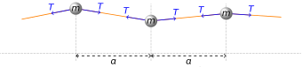
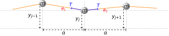

6 From Coupled Oscillators to Wave Motion
We started our explorations of oscillations and waves by acknowledging the inherent connection between the two. We have seen that harmonic oscillations can be described by sinusoidal functions (sine ansd cosine functions), and we know that sinusoidal functions take the form of a wave. However it may not be immediately clear how we get from the oscillation of a single particle to an organised group oscillation creating a wave which is capable of transmitting energy across space. We will now examine this process.
6.1 Coupled masses on a string under tension
In this example we will consider a system consisting of a number of equally spaced masses on a light string; these behave as coupled oscillators perpendicular to the axis of the string. We consider the string to be fixed at both ends and the masses to be separated by a fixed horizontal distance \(a\) (Figure 6.1)
In order to develop the equations of motion here, we need to take a number of steps:
- Knowing the masses only oscillate vertically, we need to find the vertical component of the tension for each mass
- We use this to determine the equation of motion for a given mass on the string
- Finally, we look at what happens to each mass along a string.
Let’s take each step in turn
6.1.1 Consolidating the forces
Let’s consider the mass in the middle of Figure 6.1. We will label this arbitrary \(j\)th mass \(j\). We consider the forces on it along the string towards the \((j-1)\)th and \((j+1)\)th mass. To do this, we identify a few lengths and the angles \(\theta_1\) and \(\theta_2\) (Figure 6.2):

The vertical component of the tension to the left will be given by \(T\sin \theta_1\), while the vertical component of the tension to the right will be given by \(T \sin \theta_2\).
Through the small-angle approximation, we can say:
\[ \tan \theta_1 = \frac{(y_{j-1} - y_j)}{a} \approx \sin \theta_1 \tag{6.1}\]
\[ \tan \theta_2 = \frac{(y_{j+1} - y_j)}{a} \approx \sin \theta_2 \tag{6.2}\]
The total force acting on the mass therefore becomes
\[ \begin{array}{rcl} F_{\mathsf{total}} &=& T(\sin \theta_1 + \sin \theta_2) \\ &=& T \left(\frac{(y_{j-1} - y_j)}{a} + \frac{(y_{j+1} - y_j)}{a} \right) \\ \end{array} \tag{6.3}\]
6.1.2 The equations of motion
Now that we have identified the vertical force acting on our mass (Equation 6.3) we can now write our equation of motion. We assume that this will be simple harmonic motion, therefore we can write our equation of motion for the \(j\)th mass as:
\[ m \frac{\mathrm{d}^2 y_j}{\mathrm{d}t^2} = T \left(\frac{(y_{j-1} - y_j)}{a} + \frac{(y_{j+1} - y_j)}{a} \right) \tag{6.4}\]
…or… \[ \frac{\mathrm{d}^2 y_j}{\mathrm{d}t^2} = \frac{T}{ma}(y_{j-1} - 2y_j + y_{j+1}) \tag{6.5}\]
Note
We have not placed a negative sign in Equation 6.4 in front of the force to indicate a restoring force. However, remember that we find our force using the parameters \((y_{j-1} - y_j)\) or \((y_{j+1} - y_j)\). In the example shown in Figure 6.2, \(y_j < y_{j-1}\) and \(y_j < y_{j+1}\), so we expect a positive value, so a positive force. If the situation is reversed, and \(y_j > y_{j-1}\) and \(y_j > y_{j+1}\), we would expect a negative value to arise, giving a negative value for the force.
(While the sinusoidal functions are periodic, we are only concerned for values of \(\theta\) in the range \(-\frac{\pi}{2} < \theta < \frac{\pi}{2}\)).
Warning
Note: remember that the \(a\) in Equation 6.23 is the separation between the masses on the tensioned string, not the acceleration!
Let’s now use the approach used previously; insert a trial function into the equation of motion. Assuming simple harmonic motion again, we use the trial function \(y_j = A_j \cos (\omega t + \delta)\), where \(A_j\) is the maximum amplitude of vibration. We can also use the trial functions \(y_{j-1} = A_{j-1} \cos (\omega t + \delta)\) and \(y_{j+1} = A_{j+1} \cos (\omega t + \delta)\).
We can place these into Equation 6.23 as follows:
\[ \begin{array}{rcl} \frac{\mathrm{d}^2 y_j}{\mathrm{d}t^2} &=& \frac{T}{ma}(y_{j-1} - 2y_j + y_{j+1}) \\ -\omega^2 A_j \cos (\omega t + \delta) &=& \frac{T}{ma}(A_{j-1} - 2A_j + A_{j+1})\cos (\omega t + \delta) \\ -\omega^2 A_j &=& \frac{T}{ma}(A_{j-1} - 2A_j + A_{j+1}) \end{array} \tag{6.6}\]
This can then be reformulated into our key result:
\[ -A_{j-1} + \left(2-\frac{ma\omega^2}{T}\right)A_j - A_{j+1} = 0 \tag{6.7}\]
6.2 The overview
In considering the case for each of \(n\) oscillating masses connected by a tensioned string, it is all very much looking like a coupled oscillator system, akin to that introduced in Section 4.8. We would therefore expect to have a set of \(n\) coupled equations, which in turn will give \(n\) different values of \(\omega^2\). We can apply the matrix methods we introduced in Section 4.8, however let’s just look at the first two cases (one mass and two masses).
6.2.1 A single mass on a tensioned string (\(n = 1\))
This is a fairly straightforward analysis. Adapting Equation 6.7, \(A_{j-1}\) and \(A_{j+1}\) reduce to zero as these represent the fixed ends of the string. Our fundamental equation therefore becomes:
\[ \begin{array}{rcl} -A_{0} + \left(2-\frac{ma\omega^2}{T}\right)A_1 - A_{2} &=& 0 \\ \left(2-\frac{ma\omega^2}{T}\right)A_1 &=& 0 \end{array} \] …with the result that
\[ \omega^2 = \frac{2T}{ma} \tag{6.8}\]
We therefore have a single vibrational frequency, \(\omega\) when we have a single mass oscillating on a tensioned string. This is not a great surprise, and is easily visualised.
6.2.2 Two masses on a tensioned string, \(n = 2\):
If we have two masses on the string, we now need to consider the respective equations for the first (\(j = 1\)) and the second (\(j = 2\)) masses.
- For \(j = 1\):
- \(A_0 = 0\)
- For \(j = 2\):
- \(A_{3} = 0\)
Equation 6.7 then becomes:
\[ \begin{array}{rcl} -A_{0} + \left(2-\frac{ma\omega^2}{T}\right)A_1 - A_{2} &=& 0 \\ -A_{1} + \left(2-\frac{ma\omega^2}{T}\right)A_2 - A_{3} &=& 0 \\ \end{array} \]
which, when we apply the boundary conditions for \(A_0\) and \(A_3\), becomes:
\[ \begin{cases} \left(2-\frac{ma\omega^2}{T}\right)A_1 - A_{2} = 0 \\ -A_{1} + \left(2-\frac{ma\omega^2}{T}\right)A_2 = 0 \end{cases} \tag{6.9}\]
This is simply a pair of simultaneous equations in \(A_1\) and \(A_2\); substituting through to eliminate \(A_2\), we arrive at the result:
\[ \begin{array}{rcl} A_1 \left[\left(2-\dfrac{ma\omega^2}{T}\right)^2 - 1 \right] &=& 0 \\ \left(2-\dfrac{ma\omega^2}{T}\right)^2 - 1 &=& 0 \end{array} \]
This now factorises:
\[ \left(2-\dfrac{ma\omega^2}{T} +1 \right) \left(2-\dfrac{ma\omega^2}{T} - 1 \right) = 0 \] This shows that we end up with two possible solutions for \(\omega^2\):
\[ \omega_1^2 = \frac{T}{ma} \quad \mathsf{and} \quad \omega_2^2 = \frac{3T}{ma} \tag{6.10}\]
These are the frequencies corresponding to the normal modes of vibration on the string; note that while the values are different to the coupled oscillator model in Chapter 4, the principle is the same - where two oscillating masses give two characteristic frequencies, each corresponding to a specific normal mode.
6.2.3 The general case, \(n\) masses on a tensioned string:
Let’s return to our fundamental equation (Equation 6.7):
\[ -A_{j-1} + \left(2-\frac{ma\omega^2}{T}\right)A_j - A_{j+1} = 0 \] From Equation 6.8 for a single mass on a string we note that \(\omega_1^2 = \frac{2T}{ma}\); therefore the term \(\frac{T}{ma}\) is intrinsically linked to a frequency. Let’s therefore define this as a fundamental frequency, \(\omega_0\). We now use this reformulate our fundamental equation to isolate the \(A\) terms
\[ \frac{A_{j-1} + A_{j+1}}{A_j} = 2-\frac{ma \omega^2}{T} = \frac{2\omega_0^2 - \omega^2}{\omega_0^2} \tag{6.11}\]
In Equation 6.11, the frequency \(\omega\) represents any normal mode frequency; therefore for any fixed value of this the right-hand side of the equation is a constant regardless of which oscillating mass we are considering. So; can we solve the equation to find a value for the amplitude of the oscillation of the \(j\)th mass, \(A_j\)?
From our coupled oscillator case in Chapter 4, we saw that for two oscillating masses in a coupled system, the amplitude varied sinusoidally (Equation 4.25, graphed in Figure 4.7). Let’s therefore assume that there is a general solution for the amplitude of the \(j\)th mass, \(A_j\).
\[ A_j = B \sin (j\phi) \tag{6.12}\]
In this, \(B\) is a constant and \(\phi\) is some constant value for a value of \(\omega_j\). Let’s now place this into Equation 6.11:
\[ \begin{array}{rcl} \dfrac{A_{j-1} + A_{j+1}}{A_j} &=& \dfrac{B \left[\sin ([j-1]\phi) + \sin ([j+1]\phi) \right]}{B \sin (j\phi)} \\ &=& \dfrac{\sin(j\phi)\cos\phi + \sin\phi\cos(j\phi) + \sin(j\phi)\cos\phi - \sin\phi\cos(j\phi)}{\sin(j\phi)} \\ &=& 2\cos\phi \end{array} \tag{6.13}\]
What does this result mean? It shows us that the ratio of the amplitudes has a constant value, independent of the number of masses oscillating on the string. Note that the value of \(\phi\) is dependent on which oscillating element we are considering; but to subscript \(\phi_j\) onto everything would make it even more untidy!
Now, if we can identify values for \(\phi\), this will allow us to determine the allowed expressions for \(\omega\), the frequencies of the normal modes in the system.
6.2.4 Finding the amplitude of the \(j\)th element
In Equation 6.13 we have presented the general solution for the amplitude ratios of the \(j\)th element of an oscillating system:
\[ \frac{A_{j-1} + A_{j+1}}{A_j} = 2 \cos \phi_j \tag{6.14}\]
To find an expression for \(\phi_j\), we can use our boundary conditions, namely that \(A_0 = A_{n+1} = 0\), and use this with the trial function \(A_j = B \sin (j\phi)\):
\[ \begin{cases} A_0 = B \sin 0\phi = 0 \\ A_{n+1} = B \sin (n+1)\phi = 0 \end{cases} \tag{6.15}\]
The first case is not particularly useful; let’s instead look at the second case. The boundary condition of the sine function being equal to zero gives us the following:
\[ \begin{array}{rcl} B \sin(n+1)\phi &=& 0 \\ \sin (n+1)\phi &=& 0 \end{array} \tag{6.16}\]
For this to be true, then: \[ \begin{array}{rcl} (n+1)\phi_m &=& 0, \pi, 2\pi, \dots, r\pi \end{array} \tag{6.17}\]
…where \(r\) is simply an arbitrary integer. This then gives us an expression for the \(r\)th value of \(\phi_r\) in an \(n\)-oscillator system. This gives our values of \(\phi_r\) as:
\[ \phi_r = \frac{r\pi}{n+1} \tag{6.18}\]
Putting this back into the trial function we proposed (\(A_j = B \sin (j\phi)\)), we find that the amplitude of the \(j\)th mass at a fixed normal mode frequency \(\omega_r\) to be:
\[ A_j = B \sin \frac{jr\pi}{n+1} \tag{6.19}\]
6.2.5 Identifying the allowed frequencies
We can now use the expression for \(\phi_r\) presented in Equation 6.18 and place this into Equation 6.13 and Equation 6.11
\[ \frac{A_{j-1} + A_{j+1}}{A_j} = \frac{2\omega_0^2 - \omega_r^2}{\omega_0^2} = 2\cos\phi_r = 2 \cos \frac{r\pi}{n+1} \]
We can then solve this for the frequency of the \(r\)th vibrational mode (\(\omega_r\)) within the system:
\[ \begin{array}{rcl} \dfrac{2\omega_0^2 - \omega_r^2}{\omega_0^2} &=& 2 \cos \dfrac{r\pi}{n+1} \\ 2- \dfrac{ \omega_r^2}{\omega_0^2} &=& 2 \cos \dfrac{r\pi}{n+1}\\ \omega_r^2 &=& 2\omega_0^2 \left[ 1 - \cos \dfrac{r\pi}{n+1} \right] \end{array} \tag{6.20}\]
Alphabet soup!
We’ve used a lot of subscripts, so it is worth taking a bit of time to remind ourselves what we have used.
\(n\) - We have \(n\) oscillators on our tensioned string, which will give \(n\) normal vibrational modes of the system.
\(j\) - This is the label for the \(j\)th oscillator in our \(n\)-oscillator system. e.g. In a system of ten oscillators (\(n = 10\)), we may be looking at the fourth oscillating mass (\(j = 4\)).
\(r\) - This is the label for the normal mode frequency of interest. So in a ten oscillator system (\(n=10\)), there are ten normal modes. Within this, we may be interested in the frequency of the sixth mode (\(\omega_r, r = 6\)).
6.2.6 Tying it all together - the takeaway points
We’ve done a lot of derivation here, but what are the take-away points?
6.2.6.1 There is a maximum frequency of oscillation
Looking at Equation 6.20, there is a maximum frequency of oscillation available. The cosine function can only vary between \(-1\) and \(1\); when the cosine function is equal to \(-1\), then: \[ \begin{array}{rcl} \omega_{r,\mathsf{max}}^2 &=& 2\omega_0^2 [1 - (-1)] = 4\omega_0^2 \\ \\ \omega_{r,\mathsf{max}} &=& 2\omega_0 \end{array} \tag{6.21}\]
This frequency is called a cutoff frequency and is a feature of many lattice vibrations.
6.2.6.2 The frequencies of normal modes of oscillation
From Equation 6.20 and the value of \(\omega_0^2 = \frac{T}{ma}\), we can identify the frequency of any normal mode of oscillation within the system:
\[ \begin{array}{rcl} \omega_r^2 &=& 2\omega_0^2 \left[ 1 - \cos \dfrac{r\pi}{n+1} \right] \\ &=& \dfrac{2T}{ma} \left[ 1 - \cos \dfrac{r\pi}{n+1} \right] \end{array} \tag{6.22}\]
Therefore, if we know the tension \(T\) in the string, the mass \(m\) of the oscillating masses (and that they are all the same mass), the number \(n\) of masses and the separation between the masses \(a\), we can identify the frequency of a given mode.
6.3 From coupled oscillations to the wave equation
The final destination in considering such systems of coupled oscillators is to consider “what happens when the coupled oscillators on a tensioned string are so close together they can be considered continuous?”. Intuition (and indeed the title of this course!) tells us that these should “of course” form a wave. But it can be helpful to work through this and validate it appropriately. After all, what is a wave anyway?
6.3.1 Getting started
We need to firstly identify what we know about a given system. From Equation 6.23 we identified the equations of motion of the \(j\)th mass in an \(n\)-oscillator system:
\[ \frac{\mathrm{d}^2 y_j}{\mathrm{d}t^2} = \frac{T}{ma}(y_{j-1} - 2y_j + y_{j+1}) \tag{6.23}\]
Alongside this, we also know that, for a system of \(n\) oscillating masses on a tensioned string, we will have \(n\) normal modes of vibration; within this set of modes, any given mode \(r\) will have a specific frequency \(\omega_r\). This means that, in a given vibration mode, the \(y\)-displacement of each mass in the system will all have the same time dependence
Finally, we know that the displacement \(y_j\) of the \(j\)th element must depend on the value of \(j\); if it did not, we would only see the simplest vibrations as all elements oscillate in concert, with \(y_{j-1} = y_j = y_{j+1}\). Given that the value of \(j\) is intrinsically connected to the \(x\) coordinate (where \(x = (j - \frac{1}{2})a\)), we can say that the displacement must depend on \(x\).
Therefore, we can say that there are two independent variables which are factored into the \(y\)-displacement; \(t\) and \(x\).
6.3.2 Reducing the spacing between elements
We have said that \(x\) is related to the spacing between masses \(a\) and the position in the chain \(j\) - so what happens as we reduce the spacing? Let’s apply our principles of calculus, and reduce the spacing such that \(a \simeq \partial x\) and let \(\partial x \rightarrow 0\). This makes \(x\) a continuous variable, and therefore the vertical displacement of an element becomes dependent on \(x\) and \(t\); \(y(x,t)\).
As we now have two independent variables, we will now need to enter the world of partial derivatives.
6.3.3 Modifying the equations…
We will assume that any coupled oscillation in this new continuous system will still be a sinusoidal function, but now dependent on \(x\) as well as \(t\). We propose it takes the form:
\[ y(x,t) = \sin (kx + \omega t) \tag{6.24}\]
For now, we will say that the term \(k\) is there to keep the units of \(kx\) congruent with the units of \(\omega t\); if the frequency \(\omega\) is a “per second” (s\(^{-1}\)) unit to cancel the time unit of \(t\), then \(k\) must be a “per metre” unit (m\(^{-1}\)) to cancel the length unit of \(x\). It has deeper meaning which we will come to later.
As \(x\) is now a continuous variable, we can now return to Equation 6.23, and rewrite this as:
\[ \frac{\partial^2 y}{\partial t^2} = \frac{T}{ma}(y_{j-1} - 2y_j + y_{j+1}) \tag{6.25}\]
We now need to consider the meaning of \(y_{j-1}\), \(y_j\) and \(y_{j+1}\) in the context of a continuously variable \(x\). In Section 6.3.2 we said that the spacing \(a\) reduced to \(\partial x\); we can therefore say:
- \(y_j\) becomes \(y(x,t)\)
- \(y_{j-1}\) becomes \(y(x-\delta x, t)\)
- \(y_{j+1}\) becomes \(y(x+\delta x, t)\)
We now use a Taylor series expansion on the function \(y(x\pm \partial x , t)\), and we obtain:
\[ y(x\pm \delta x , t) = y(x) \pm \delta x \frac{\partial y}{\partial x} + \frac{1}{2} (\pm \delta x)^2 \frac{\partial^2 y}{\partial x^2} \]
This is when we say “so what?” Well, if we remember the initial form of Equation 6.23, it was actually derived from:
\[ \frac{\mathrm{d}^2 y_j}{\mathrm{d}t^2} = \frac{T}{m}\left( \frac{y_{j+1} - y_j}{a} - \frac{y_j - y_{j-1}}{a}\right) \]
This immediately gives us an equation we can use our Taylor series expansion on:
\[ \begin{array}{rcl} \dfrac{\partial^2 y}{\partial t^2} &=& \dfrac{T}{m}\left( \dfrac{y(x+\delta x, t) - y(x,t)}{a} - \dfrac{y(x,t) - y(x-\delta x, t)}{a}\right)\\ &=& \dfrac{T}{m}\left( \dfrac{\delta x \frac{\partial y}{\partial x} + \frac{1}{2} (\delta x)^2 \frac{\partial^2 y}{\partial x^2}}{\delta x} - \dfrac{\delta x \frac{\partial y}{\partial x} - \frac{1}{2} (\delta x)^2 \frac{\partial^2 y}{\partial x^2}}{\delta x}\right)\\ &=& \dfrac{T}{m} \dfrac{(\delta x)^2}{\delta x} \dfrac{\partial^2 y}{\partial x^2} \\ &=& \dfrac{T}{m} (\delta x) \dfrac{\partial^2 y}{\partial x^2} \end{array} \tag{6.26}\]
You may find it helpful to ensure you can follow through the cancellation steps in this arrangement and verify your own understanding.
6.3.4 The Wave Equation
Our final step is to consider what the terms are in the final step in Equation 6.26, in particular the \(\partial x / m\) term. If we invert it to obtain \(m/\partial x\), we have a “mass per unit length”. This is often known as a ‘linear mass density’, and is usually assigned the symbol \(\rho\). When we place this into Equation 6.26, we obtain:
\[ \frac{\partial^2 y}{\partial t^2} = \frac{T}{\rho} \frac{\partial^2 y}{\partial x^2} \tag{6.27}\]
Equation 6.27 is the wave equation, and it is a tool we can use to verify the validity of a wave function - if, when differentiated appropriately, a function can fit this relation, then it is a valid wavefunction and can be used to describe a propagating wave.
A useful observation in the wave equation is that the \(T/\rho\) term has units m\(^{2}\) s\(^{-2}\); a speed squared. We may sometimes see this term replaced in the wave equation with a \(v^2\) term, corresponding with the speed of propagation of the wave.
We will revisit the wave equation again in the future.
6.4 Summary of key points
We’ve covered a lot in this section, and it can be difficult to see the thread of the discussion, so it is helpful to revisit the key points.
- The coupled oscillator model from Chapter 4 showed us that for two oscillators coupled together, we would expect to see two normal modes of vibration, each with a distinct frequency.
- We extended this to many masses on a tensioned string behaving as coupled oscillators. The tension in the string is constant, however the angle of the force on each mass varies as the string moves, inducing the transverse oscillation of each mass.
- By considering the transverse component of the tension on each mass, we could create the equations of motion. Solving these for the case of one mass on a string, then two masses on a string, we verified that for \(n\) masses, we would expect to see \(n\) characteristic frequencies.
- We determined an expression for the allowed frequencies and found that, while we would obtain \(n\) frequencies for an \(n\)-component system, there is an upper limit to the frequency for any normal mode - this is the cut-off frequency
- Finally, we showed that, as we increase the number of oscillating masses and reduce the space between them, the movement of the system becomes closer and closer to a sinusoidal wave.